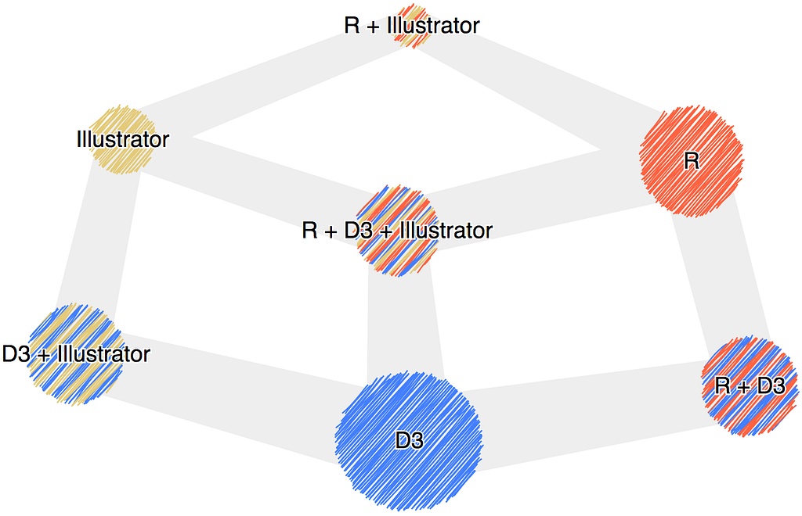
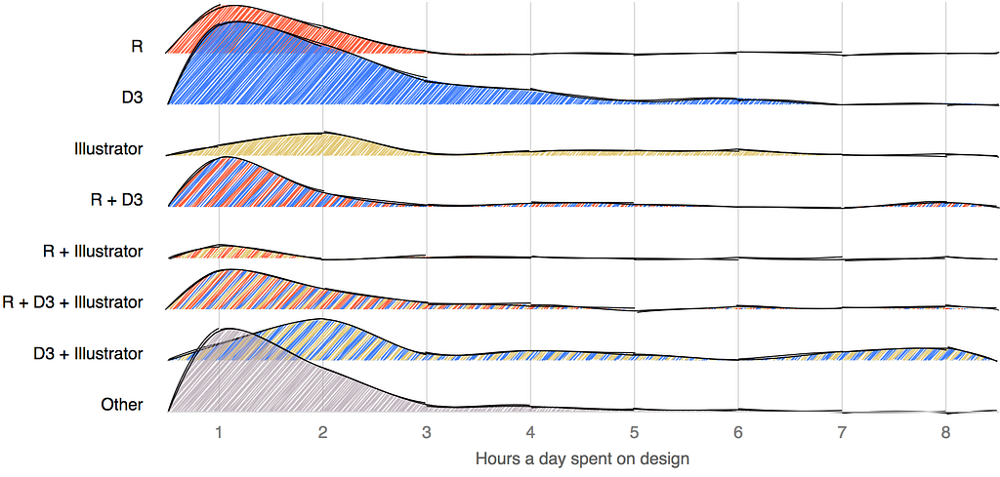
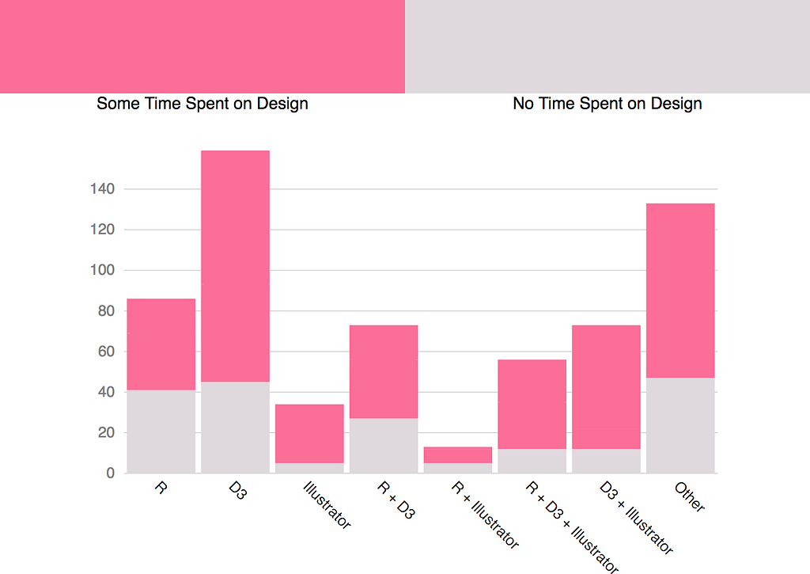
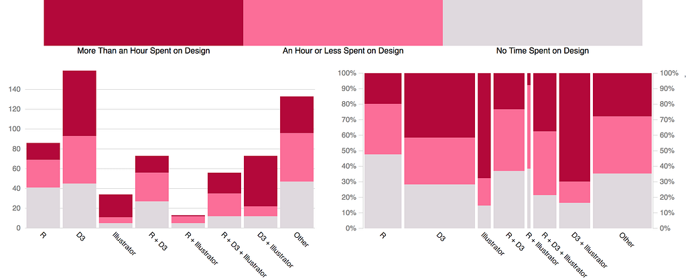
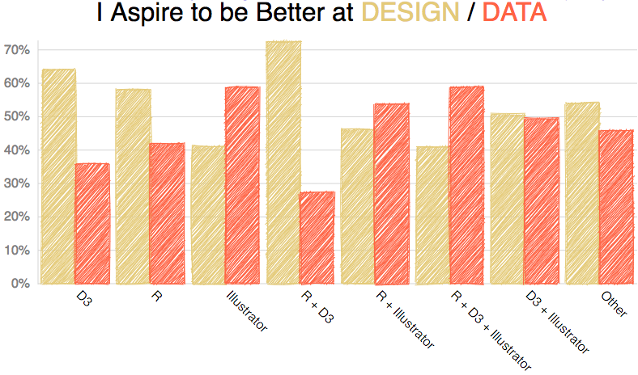

But do R users invest in design?
Last week dataviz twitter was abuzz when Edward Tufte bemoaned the inability of R to create nice-looking graphs with good labels and annotations. He suggested that the only way to get to the kind of quality charts he’s promoted in his books was to take the output of R into Adobe Illustrator and invest in “reasoning about words on graphics”.
@ClausWilke For the many of us who are blocked by ET
If you’re new to data visualization, you might think that such a pronouncement would lead to a reevaluation of how people are using R and whether they’re using the programming language to create quality charts. After all, it’s Edward Tufte, Patron Saint of Data Visualization.
You would be wrong.
You might not know it but there’s quite a fractious relationship between the modern data visualization community and Tufte. Some feel he interacts too imperiously, some feel his whole approach is based on a few intuitions that have not been backed up by research, and some feel that his key examples have problematic assumptions. Many prominent data visualization practitioners on Twitter hold it as a badge of honor to be blocked by Tufte.
So it should be no surprise that the response to Tufte’s tweet was mostly to say that R does provide the ability to do good dataviz design. Tufte’s claim seemed to imply that it was literally impossible and so it was easy enough for the R user community to present examples of charts made with R that were similar to, if not exact copies of, the examples Tufte has used.
Man, it's a shame @EdwardTufte said this is impossible to do in #rstats with just code. I guess I shld delete my blog post. https://t.co/sw5CHXxViY
But the substance of the critique was not that R was technically incapable of using design, rather that data visualization design is not associated with using R. It’s easy to see why Tufte’s tweet was interpreted this way, since he suggested R “wasn’t enough” and that you would need to pull the results into another tool, like Illustrator. Whether Tufte meant it or not, this question of whether R users think of design as worth their time and investment is too important to ignore.
To understand it better, I looked at the 2018 Data Visualization Survey. I don’t use R or Illustrator in my practice and the survey participants were skewed toward my social media reach, but I’m lucky enough to know a few people who are prominent in different data visualization communities who also shared the survey. So, while it’s no surprise that this survey overrepresents D3, it has a good representation of people who use R and even a decent number of people using Illustrator for data visualization.

A few of the questions had to do specifically with the role of design in data visualization and one in particular asked the participant to estimate the amount of time per day they spent on design.

Plotting this, we can see that R users lag D3 users in their time investment in design and seriously lag Illustrator users. That difference in investment in design from the D3 community and the R community is not so enormous but remember that the D3 community itself suffers from a lack of investment in design.
Most interesting is the shape of the curves when Illustrator is part of the data visualization process. If the respondent declared R and Illustrator among their tools (but not D3) the investment of time in design was actually less. In all other cases, Illustrator being part of your toolkit seemed to indicate a greater value for the design process.
When we compare the people who did not give any time to design to those who did, the results are more striking.

Nearly half of participants who use R but not D3 or Illustrator do not think design is worth any time at all in their process. I suspect this reflects not only a lack of prioritization of design among R users but also a definitional difference. I would not be surprised to find many R users think of design purely as graphical design.
The difference becomes even more clear if we divide the design category into those who spend a minimal amount of time on design (1 hour or less per day) with those who spend more.

So while there are examples of beautifully designed charts created purely with R, the survey responses support the stereotype of R charts as only those with the light gray background and default color scheme and little or no labels and annotation. It also supports a fundamental aspect of Tufte’s critique, and why we should be more open to criticism even when it comes in a less-than-perfect package.
But there’s something else about the survey: The majority of respondents said they wanted to be better at design with data visualization. And in the case of those who use R, this desire to emphasize leveling up design over data was more prominent, not less. It might be this realization that the community needed to work on its design skills that made it so sensitive to Tufte’s criticism.

Design is intimidating, especially in data visualization where little has been done to translate it into maxims beyond a few things about color, labeling and chart selection. There also seems to be a bias among statisticians and data scientists against “pretty” charts as being something that are somehow rhetorically compromised. It seems like, and I’ve in no way done an exhaustive study to support this, that there’s a sense among scientists that the default settings just show you the data and that any more work beyond that is to dress up the data dishonestly.
I suspect more than that it’s a matter of time. You can learn a new dimensional reduction technique, which has concrete steps and measurable ways that it helps with your practice, or you can read about information design and come away with more questions than answers. It’s hard to evaluate and hard to reward good design in a field that doesn’t value it, and so it’s difficult to ask professionals to invest in it.
But there is value in data visualization design, as evidenced by the response to Tufte’s critique and the evidence presented to him of charts made with R that were well-designed. Well-designed charts don’t just win Twitter arguments, they communicate more effectively in all situations, and we should all strive to get better at data visualization design, whether we use R or not.
You Can Design a Good Chart with R was originally published in Towards Data Science on Medium, where people are continuing the conversation by highlighting and responding to this story.